Sistem Permohonan JOC
Saringan peringkat fakulti bagi permohonan MySISWA Job on Campus (JoC) — untuk Pemohon, TD HEPA (Penyemak) dan Pentadbir Sistem.
Apa yang ada dalam manual ini
Pilih bahagian yang berkaitan dengan peranan anda. Semua staf boleh mula dengan Bahagian 1.
1 · Pengenalan
Apa itu JoC, aliran proses, peranan dan cara log masuk.
2 · Pemohon
Isi borang, lampirkan bukti, hantar, buat pindaan dan muat turun surat.
3 · TD HEPA (Penyemak)
Semak permohonan, buat keputusan, surat kelulusan dan laporan.
4 · Pentadbir
Urus pengguna dan peranan, tetapan emel dan log emel.
Apa itu MySISWA Job on Campus (JoC)?
Inisiatif Kementerian Pendidikan Tinggi (Belanjawan 2026) yang memberi peluang kepada mahasiswa universiti awam bekerja sambilan di dalam kampus — menjana pendapatan sambil menimba pengalaman kerja sebenar. Di UniMAP, program ini diselaraskan oleh CGEE.
kadar bayaran sejam
maksimum seminggu semasa semester
maksimum seminggu semasa cuti semester
kluster: Pentadbiran & Operasi · Perkhidmatan · Teknikal · Project Based / Profesional · Keusahawanan
Kenapa saringan peringkat fakulti?
Sebelum staf mendaftar tawaran latihan di portal kebangsaan MySISWA@JoC, setiap program JoC di FKTEN disemak dan diluluskan dahulu oleh Timbalan Dekan (Hal Ehwal Pelajar dan Alumni) — TD HEPA.
Satu tempat
Borang, bukti kelulusan, ulasan dan keputusan disimpan bersama — tiada lagi emel berselerak.
Emel automatik
Pemohon, Penyemak dan CGEE dimaklumkan secara automatik pada setiap peringkat.
Surat kelulusan PDF
Surat rasmi berletterhead FKTEN dijana serta-merta apabila diluluskan.
Akaun UniMAP sahaja
Log masuk dengan akaun Google @unimap.edu.my. Fail disimpan secara peribadi dalam Google Drive fakulti.
Rekod lengkap
Setiap tindakan direkod (siapa, bila, versi) untuk rujukan dan laporan.
Boleh guna di telefon
Paparan menyesuaikan diri dengan komputer, tablet dan telefon.
Aliran proses dalam 4 langkah
Klik setiap langkah untuk penerangan.
Mohon di sistem ini
Pemohon
Semakan TD HEPA
Penyemak
Surat kelulusan
Automatik
Daftar di portal JoC
Pemohon
Peranan dalam sistem
Setiap staf yang log masuk secara automatik menjadi Pemohon. Peranan lain diberikan oleh Pentadbir. Satu akaun boleh mempunyai lebih daripada satu peranan.
Pemohon
Semua staf FKTEN. Mohon JoC untuk program, buat pindaan, muat turun surat kelulusan.
Penyemak
TD HEPA (dan penyemak lain yang dilantik). Semak permohonan dan buat keputusan.
Pentadbir Sistem
Urus pengguna, peranan, senarai pilihan dan tetapan emel.
Pemerhati
Pengurusan fakulti (cth. Dekan). Lihat semua permohonan dan laporan sahaja.
Log masuk
- Buka pautan sistem yang dikongsi oleh fakulti.
- Klik Log masuk dengan akaun UniMAP.
- Pilih akaun @unimap.edu.my anda di skrin Google.
- Kali pertama sahaja: lengkapkan profil (jabatan, jawatan, no. telefon).
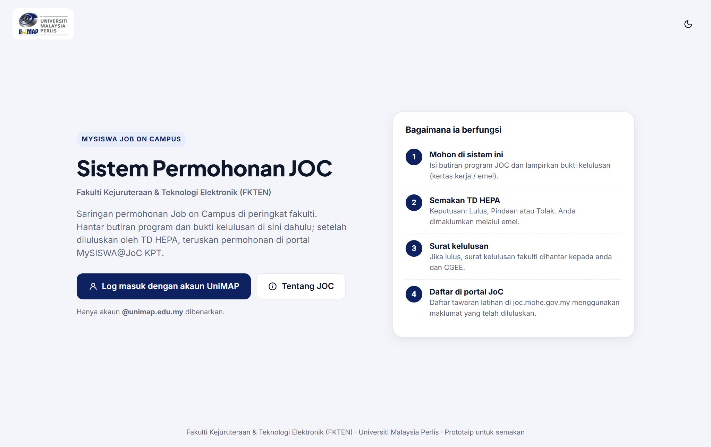
Klik untuk besarkan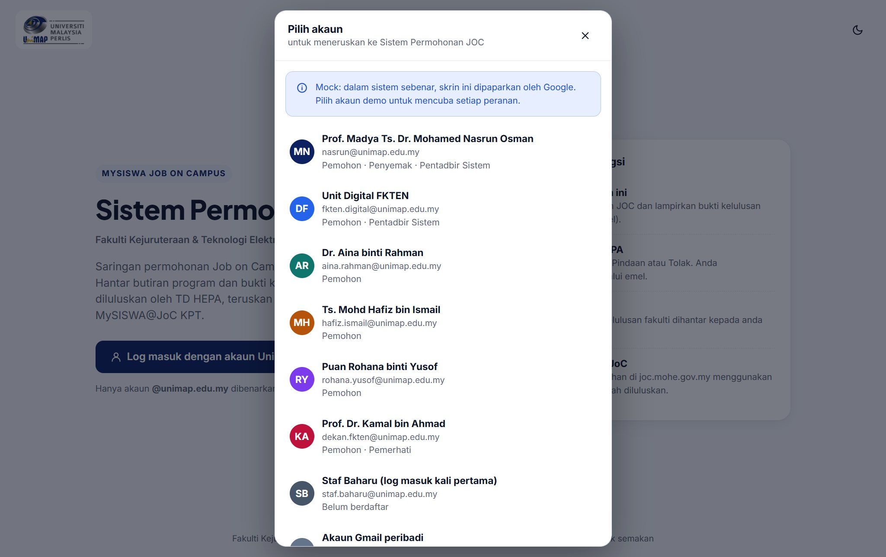
Klik untuk besarkanPilih peranan
Jika akaun anda mempunyai lebih daripada satu peranan (contohnya TD HEPA ialah Pemohon, Penyemak dan Pentadbir), sistem akan bertanya peranan untuk sesi ini.
- Klik kad peranan untuk masuk.
- Tukar peranan bila-bila masa melalui menu di bahagian atas skrin atau menu avatar.
- Pilihan anda diingati untuk lawatan seterusnya.
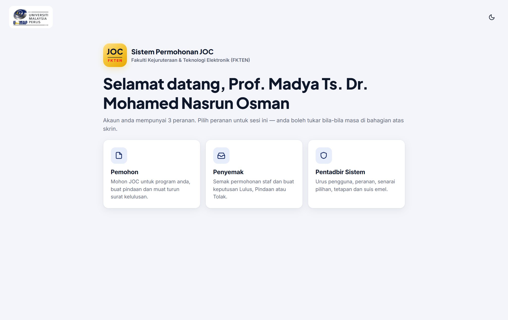
Klik untuk besarkanPemohon
Dari profil hingga surat kelulusan — langkah demi langkah untuk staf yang memohon JoC.
Lengkapkan profil (kali pertama)
- Semak nama penuh anda — nama ini dicetak pada surat kelulusan.
- Pilih jabatan dan isi jawatan.
- Isi no. telefon untuk tujuan susulan (pilihan).
- Klik Simpan.
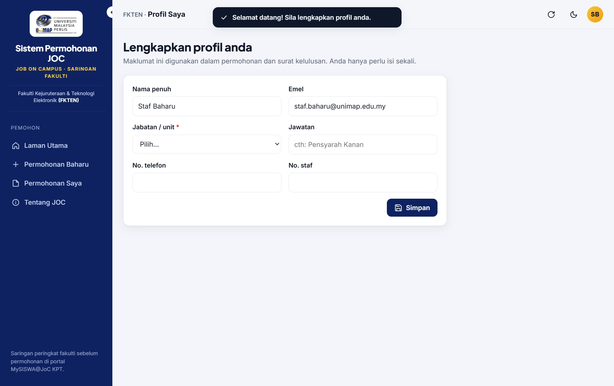
Klik untuk besarkanLaman utama
- Ringkasan bilangan permohonan: Draf, Dalam semakan, Perlu pindaan, Lulus.
- Senarai permohonan terkini dengan status berwarna.
- Butang + Permohonan Baharu untuk mula memohon.
- Butang ⟳ di bahagian atas untuk mengemas kini status terkini.
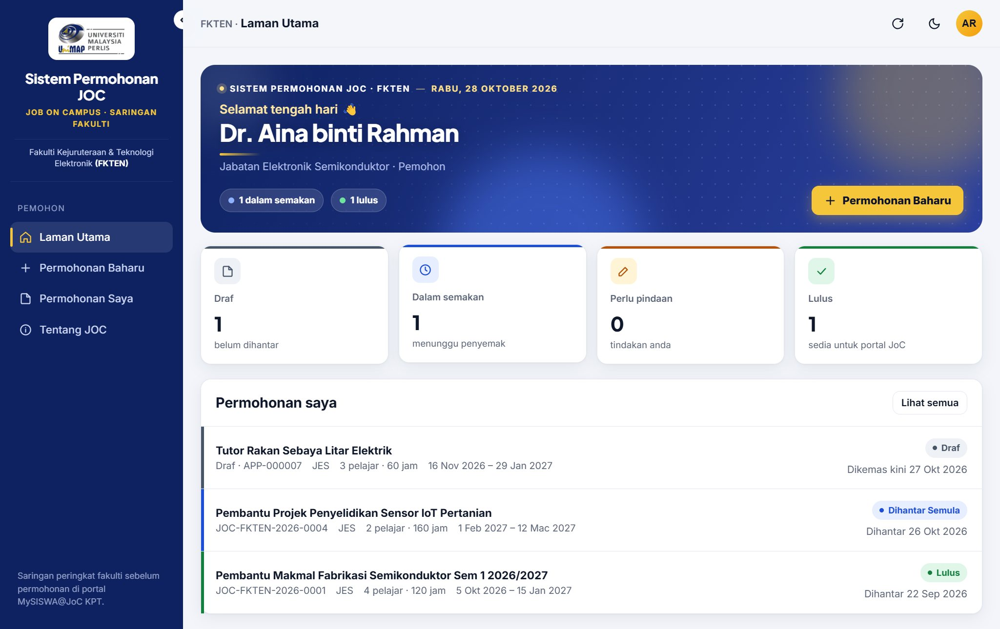
Klik untuk besarkanSebelum anda mula
Halaman ini meringkaskan syarat JoC. Sediakan perkara berikut sebelum mengisi borang:
- Kertas kerja / emel / surat kelulusan program (PDF atau gambar).
- Tarikh mula dan tamat, serta jumlah jam bagi setiap pelajar.
- Skop tugas pelajar (satu tugas setiap baris).
- Senarai pelajar (no. matrik & nama) jika telah dikenal pasti.
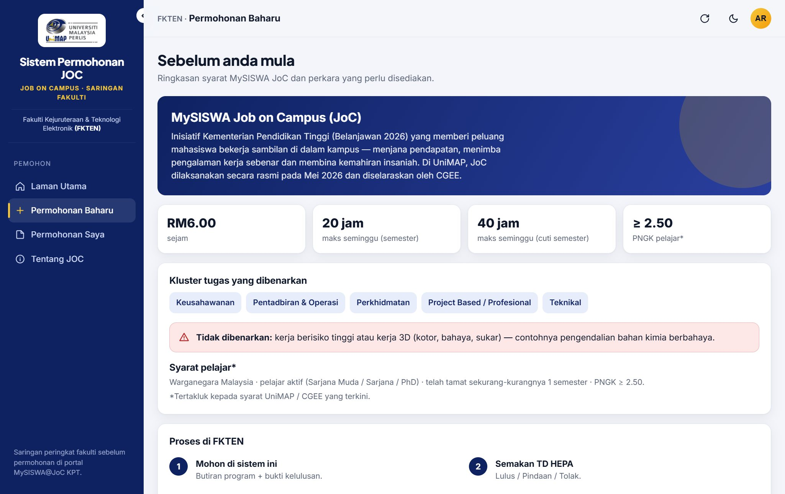
Klik untuk besarkanMaklumat program
- Nama program / aktiviti.
- Penganjur / unit — taip bebas (makmal, kelab, projek, rakan industri).
- Penerangan ringkas / objektif (2–3 baris).
- Jenis tawaran dan jenis tempoh latihan — sama seperti pilihan di portal JoC.
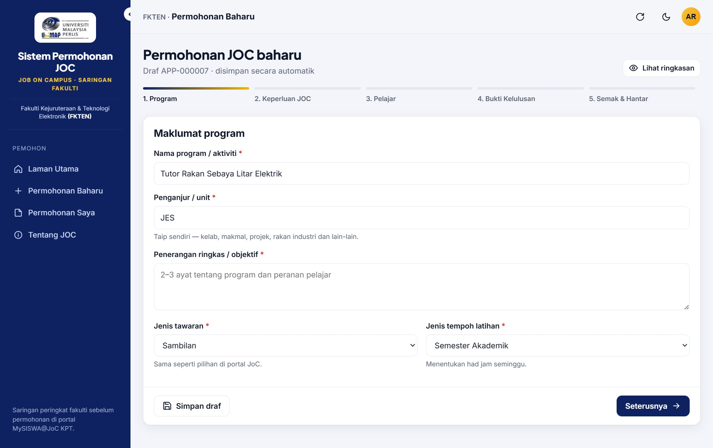
Klik untuk besarkanKeperluan JOC
- Jawatan / jenis latihan dan kategori latihan.
- Bilangan pelajar dan jumlah jam setiap pelajar.
- Tarikh mula dan tarikh tamat.
- Skop tugas — tambah satu tugas setiap baris, susun dengan anak panah.
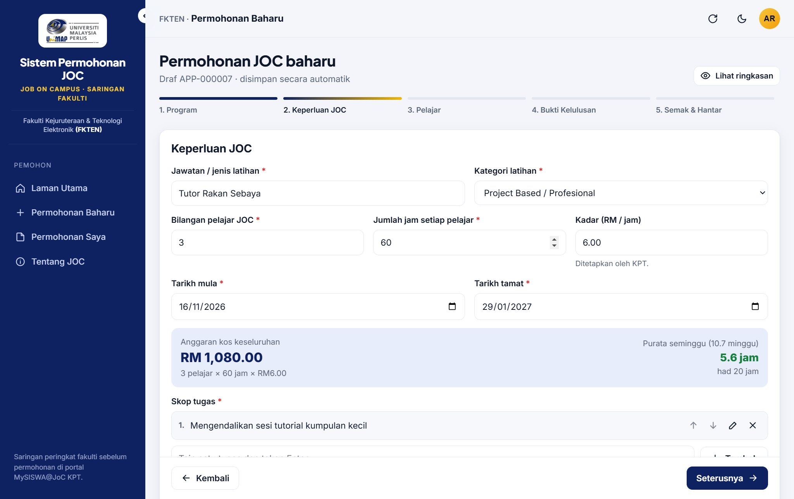
Klik untuk besarkanPelajar
Pilih bagaimana pelajar akan diambil:
- Pelajar telah dikenal pasti — masukkan no. matrik, nama dan program pengajian setiap pelajar.
- Melalui iklan terbuka JOC — tiada senarai diperlukan; pastikan iklan di portal JoC dibuka selepas permohonan diluluskan.
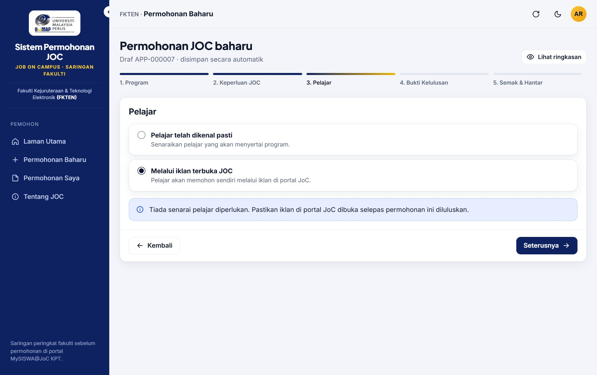
Klik untuk besarkanBukti kelulusan program
- Klik kotak muat naik (atau seret fail ke dalamnya).
- Pilih jenis bukti: kertas kerja, emel kelulusan, surat kelulusan atau lain-lain.
- Isi siapa yang meluluskan program, jawatan dan tarikh kelulusan.
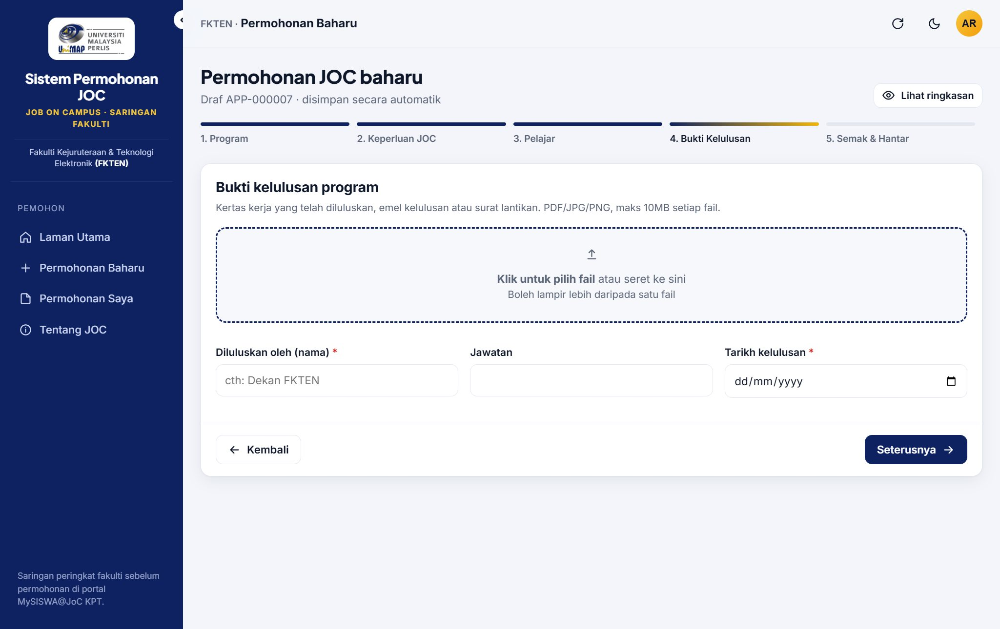
Klik untuk besarkanSemak & hantar
- Semak ringkasan permohonan. Sistem menunjukkan langkah yang belum lengkap.
- Tandakan perakuan.
- Klik Hantar permohonan.
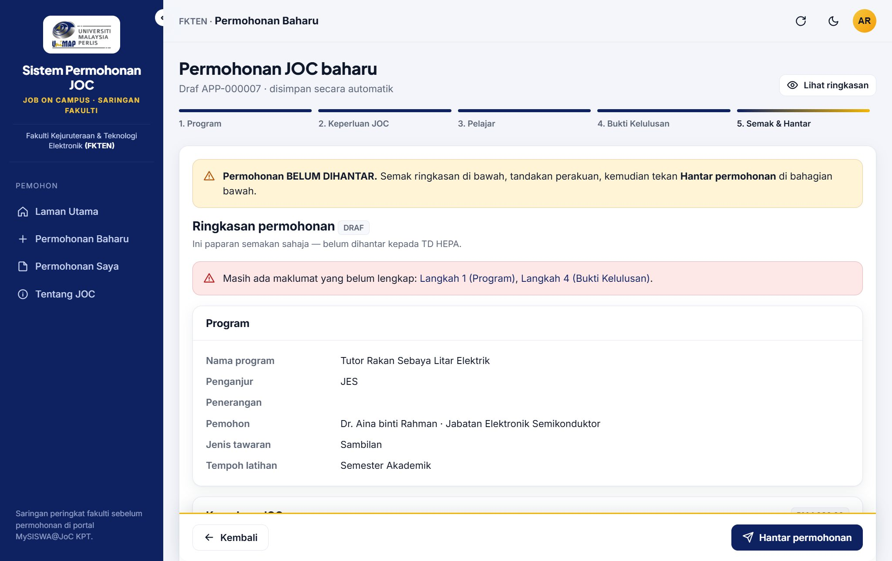
Klik untuk besarkanPermohonan saya
- Semua permohonan anda, termasuk draf, dengan status semasa.
- Klik permohonan untuk melihat butiran dan sejarah (bila dihantar, disemak, diluluskan).
- Salin — mulakan permohonan baharu berdasarkan permohonan lama (berguna untuk program berulang setiap semester).
- Padam draf — hanya untuk draf yang belum dihantar.
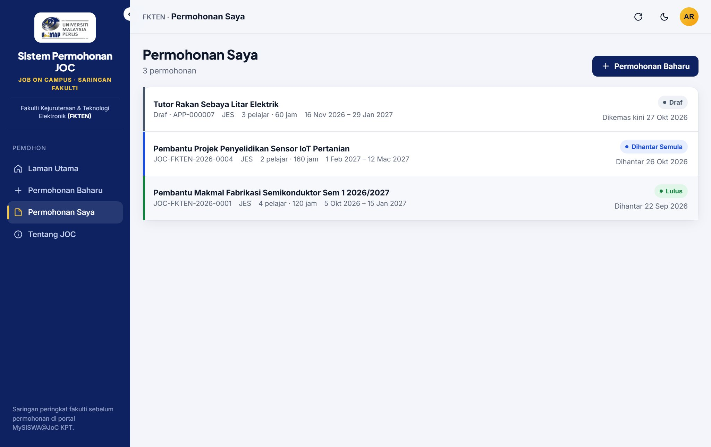
Klik untuk besarkanJika pindaan diminta
- Anda menerima emel dengan ulasan TD HEPA. Klik butang dalam emel untuk terus ke permohonan.
- Baca ulasan dalam kotak kuning, kemudian klik Buat pindaan.
- Betulkan maklumat atau tambah lampiran, kemudian hantar semula.
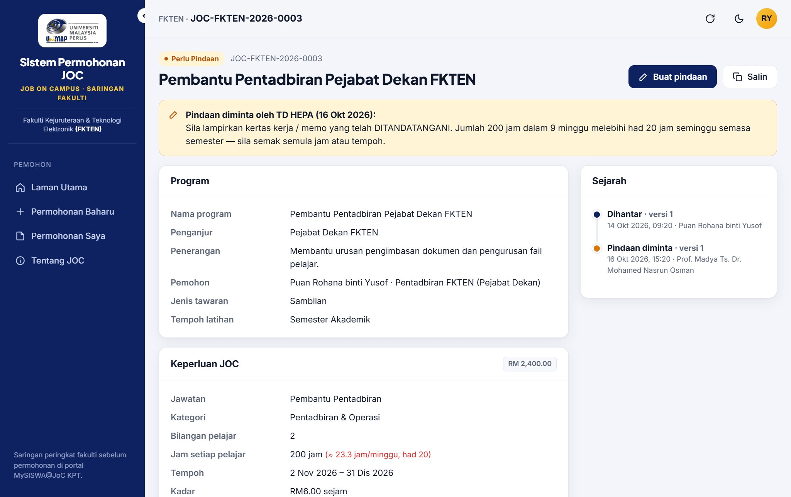
Klik untuk besarkanSelepas diluluskan
- Emel kelulusan diterima bersama surat kelulusan PDF.
- Surat kelulusan (PDF) — muat turun semula bila-bila masa.
- Maklumat untuk portal JoC (CSV) — semua maklumat diluluskan mengikut susunan borang JoC.
- Daftar di joc.mohe.gov.my: Penempatan Latihan › Tawaran Latihan › + Tambah Tawaran Latihan.
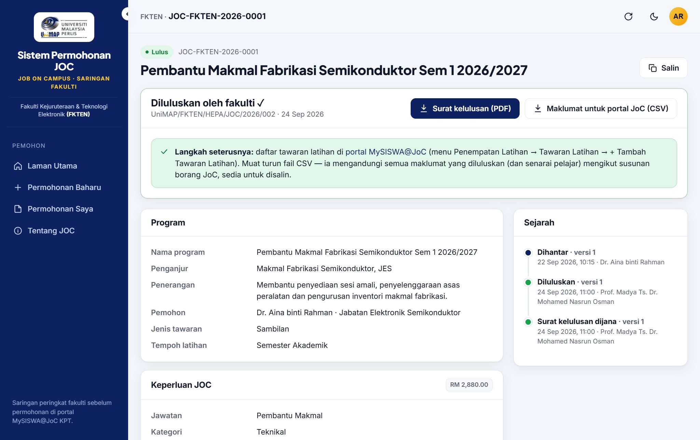
Klik untuk besarkan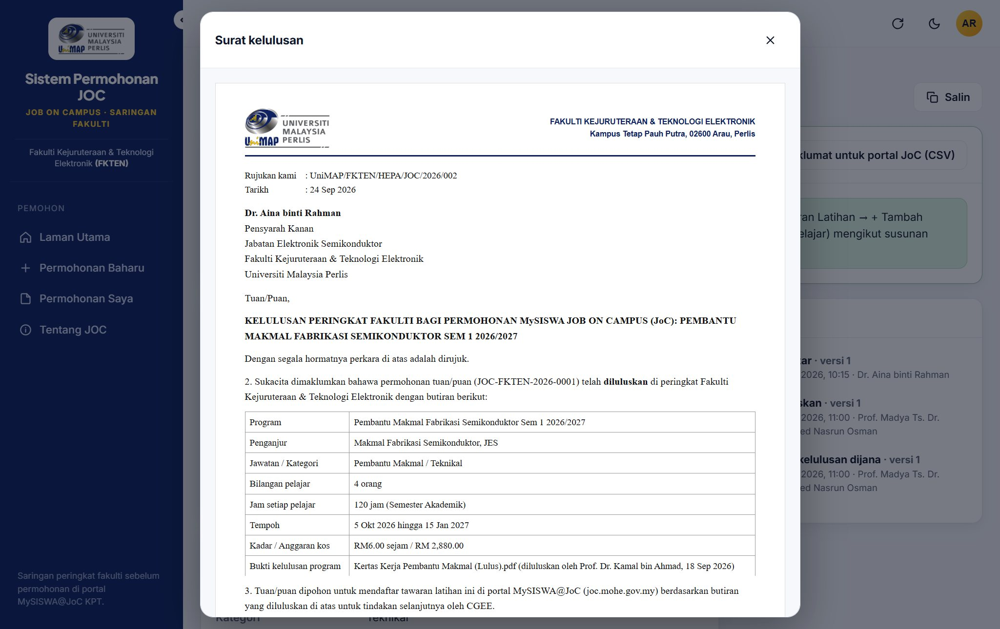
Klik untuk besarkanTD HEPA (Penyemak)
Menyemak permohonan staf dan membuat keputusan Lulus, Pindaan atau Tolak — dari komputer atau telefon.
Laman utama Penyemak
- Berapa permohonan menunggu semakan, dan berapa lama yang paling lama menunggu.
- Jumlah diluluskan, jumlah jam pelajar dan anggaran kos.
- Senarai menunggu semakan — klik untuk terus menyemak.
- Butang Buka senarai semakan.
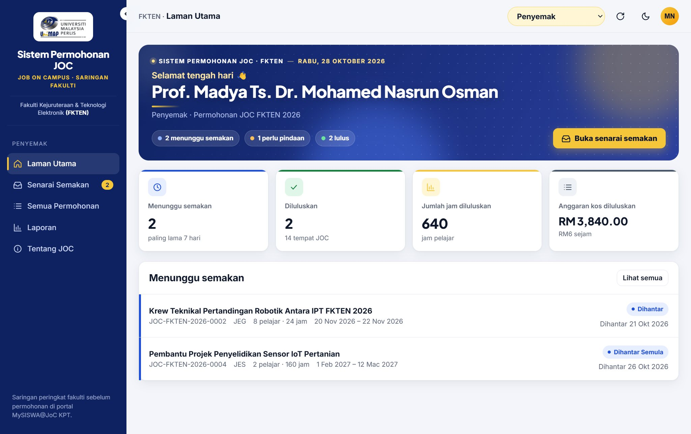
Klik untuk besarkanSenarai semakan
- Tab: Menunggu · Perlu pindaan · Lulus · Ditolak · Semua.
- Cari mengikut program, rujukan atau nama pemohon; tapis mengikut jabatan.
- Permohonan paling lama di atas. Lebih 5 hari menunggu ditanda merah.
- Eksport CSV untuk senarai semasa.
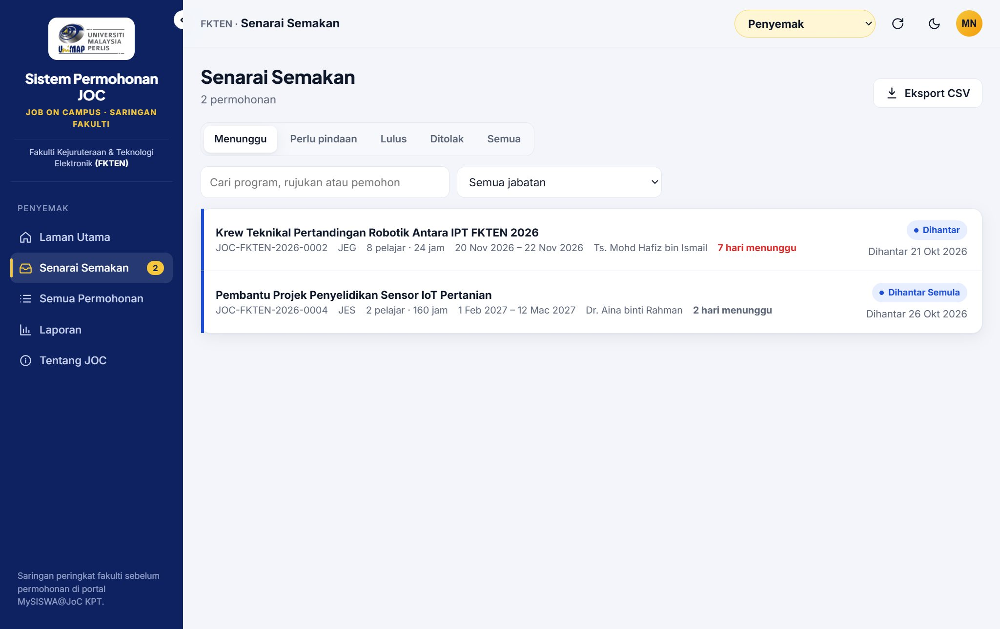
Klik untuk besarkanHalaman semakan
- Semua butiran program, keperluan JOC, skop tugas dan pelajar.
- Semakan automatik — amaran jika jam seminggu melebihi had, bilangan nama tidak sepadan, dsb.
- Permohonan dihantar semula: medan yang berubah ditanda kuning berserta ulasan anda sebelum ini.
- Lihat untuk membuka lampiran bukti kelulusan.
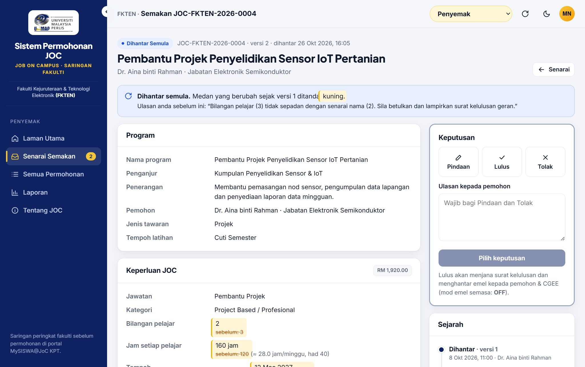
Klik untuk besarkanBuat keputusan
- Pilih Lulus, Pindaan atau Tolak.
- Tulis ulasan kepada pemohon — wajib bagi Pindaan dan Tolak.
- Klik butang pengesahan (cth. Minta pindaan).
| Keputusan | Apa berlaku |
|---|---|
| Lulus | Surat PDF dijana; emel + surat kepada pemohon dan CGEE. |
| Pindaan | Dikembalikan kepada pemohon bersama ulasan. |
| Tolak | Ditutup; pemohon dimaklumkan bersama sebab. |
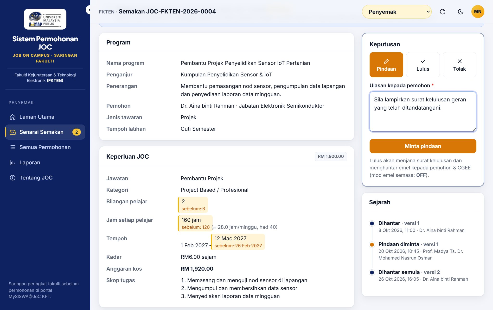
Klik untuk besarkanSurat kelulusan
- Dijana automatik sebaik sahaja diluluskan, menggunakan letterhead FKTEN.
- Nombor rujukan berturutan: UniMAP/FKTEN/HEPA/JOC/2026/001, 002, …
- Tarikh surat = tarikh kelulusan. Ditandatangani secara komputer — tiada tandatangan diperlukan.
- Jana semula surat (Penyemak / Pentadbir) — jika maklumat atau templat dikemas kini. Nombor dan tarikh kekal sama; fail lama diarkibkan.
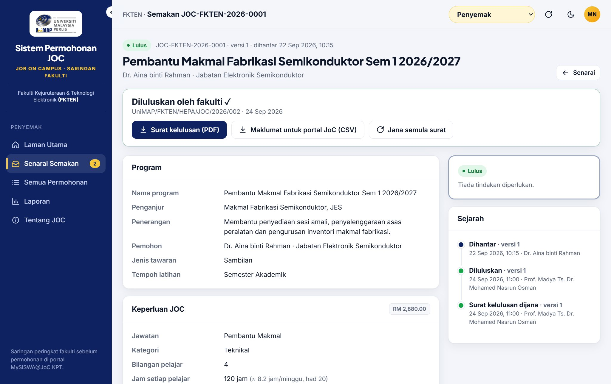
Klik untuk besarkanEmel automatik
| Bila | Kepada | s.k. |
|---|---|---|
| Permohonan baharu | Semua Penyemak | — |
| Dihantar semula | Semua Penyemak | — |
| Pindaan | Pemohon | Semua Penyemak |
| Tolak | Pemohon | Semua Penyemak |
| Lulus (+ surat PDF) | Pemohon | Semua Penyemak |
| Lulus (+ surat PDF) | CGEE | — |
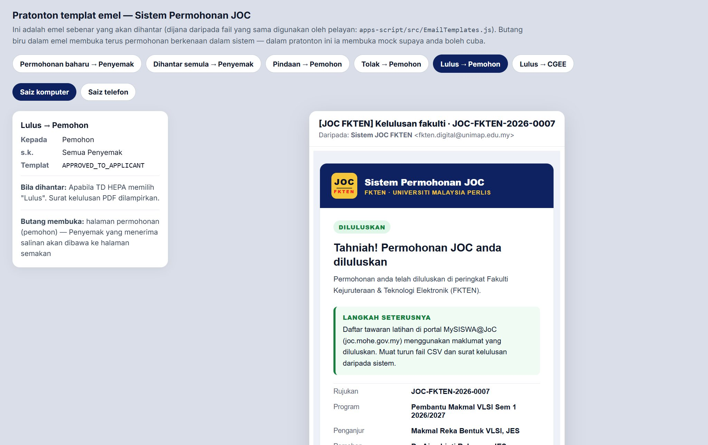
Klik untuk besarkanLaporan
- Jumlah permohonan, diluluskan, tempat JOC dan anggaran kos bagi tahun semasa.
- Pecahan mengikut jabatan dan status.
- Permohonan dihantar mengikut bulan.
- Eksport CSV untuk analisis lanjut dalam Excel / Google Sheets.
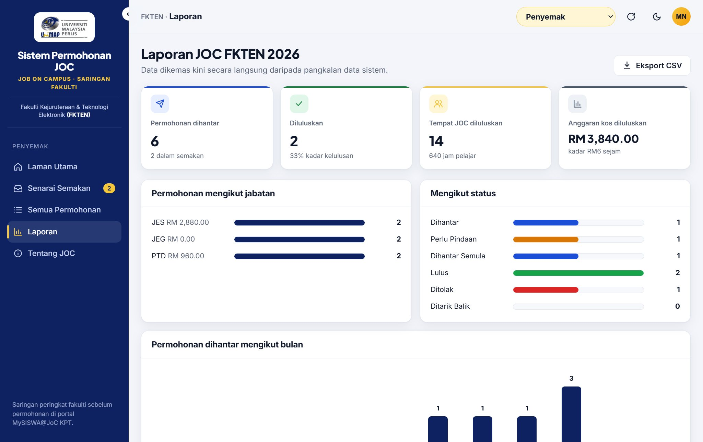
Klik untuk besarkanPentadbir Sistem
Mengurus siapa boleh menggunakan sistem, peranan masing-masing dan tetapan emel.
Pengguna & peranan
- Staf didaftarkan automatik sebagai Pemohon apabila log masuk kali pertama.
- Tandakan kotak untuk memberi atau menarik balik peranan Penyemak, Pentadbir atau Pemerhati.
- + Tambah pengguna — daftar staf lebih awal dan terus beri peranan.
- Matikan Aktif untuk menyekat akses (rekod lama kekal).
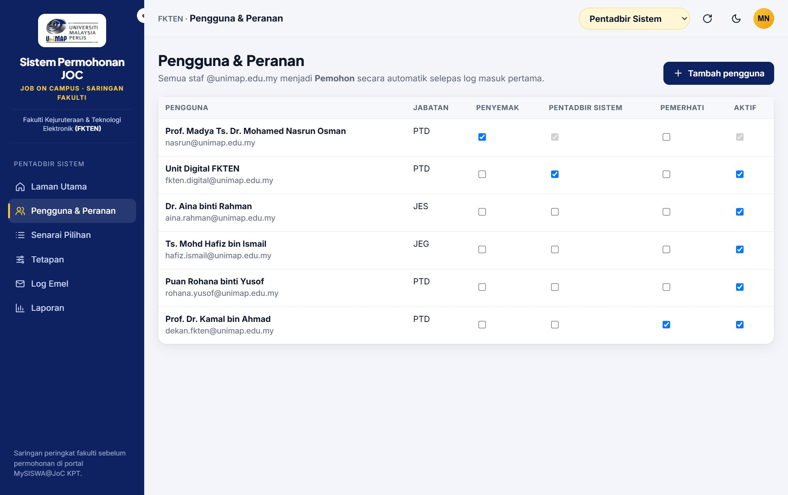
Klik untuk besarkanTetapan
| Suis emel | Maksud |
|---|---|
| OFF | Emel hanya direkod dalam log, tidak dihantar. |
| TEST | Semua emel dihantar ke alamat penguji sahaja. |
| LIVE | Emel dihantar kepada penerima sebenar. |
- Hantar kepada CGEE (YA / TIDAK) — kawal sama ada CGEE menerima emel kelulusan.
- Emel dan nama CGEE, awalan nombor rujukan, kadar RM sejam, nama penandatangan surat.
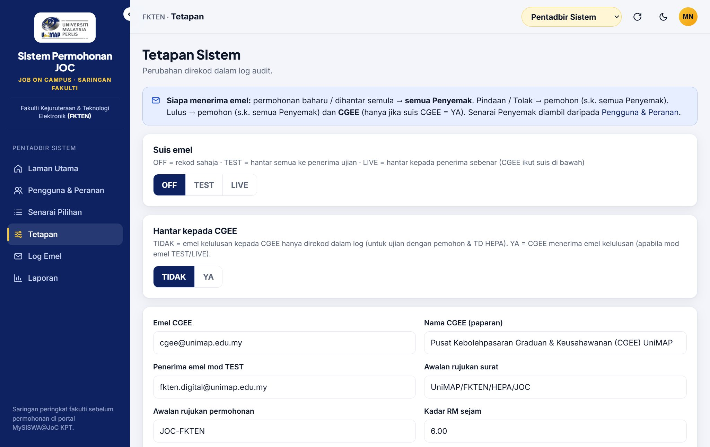
Klik untuk besarkanLog emel
- Setiap emel yang dijana oleh sistem — tarikh, templat, penerima, subjek dan status.
- Status: LOGGED (direkod sahaja), SENT (dihantar), FAILED (gagal, dengan sebab).
- Berguna untuk menjawab soalan "saya tidak terima emel".
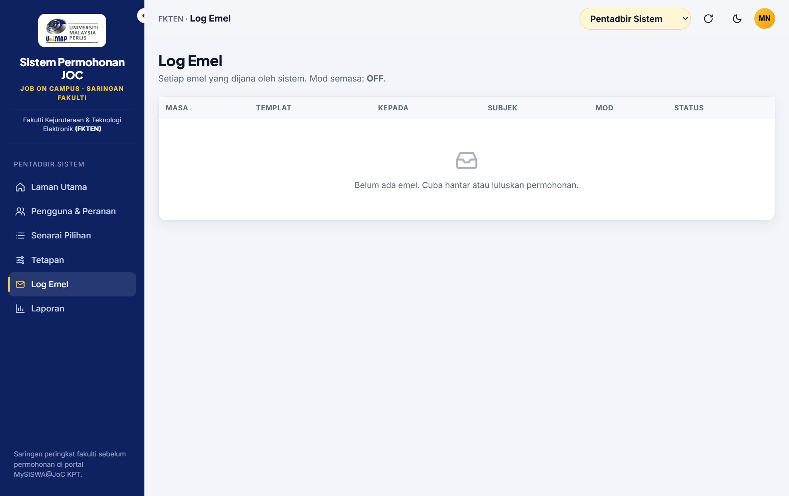
Klik untuk besarkanGuna di telefon
Sistem yang sama berfungsi di telefon dan tablet — tiada aplikasi perlu dipasang.
- Buka pautan sistem dalam pelayar telefon (Chrome / Safari).
- Menu di butang ☰ di penjuru kiri atas.
- TD HEPA boleh menyemak dan membuat keputusan terus dari pautan dalam emel.
- Tema cerah / gelap mengikut tetapan telefon, atau tukar dengan butang 🌙.
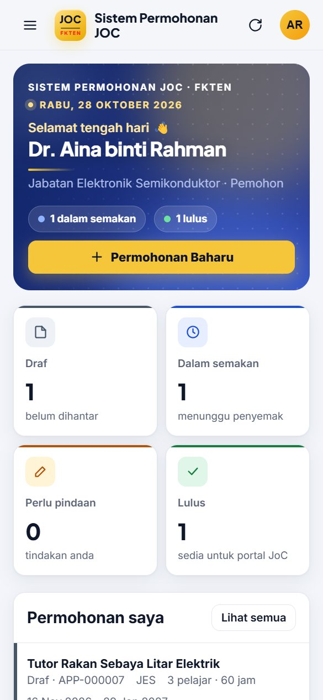
Soalan lazim
Saya tidak dapat log masuk.
Gunakan akaun Google @unimap.edu.my. Jika muncul "Sorry, unable to open the file" atau sistem dibuka dengan akaun yang salah, lihat Masalah akaun Google.
Boleh saya simpan dan sambung kemudian?
Ya. Borang disimpan secara automatik sebagai draf. Buka Permohonan saya dan klik draf untuk menyambung.
Boleh saya ubah permohonan selepas dihantar?
Tidak, kecuali TD HEPA meminta pindaan. Jika ada kesilapan besar, hubungi TD HEPA supaya permohonan dikembalikan untuk pindaan.
Saiz dan jenis fail lampiran?
PDF, JPG atau PNG, maksimum 10 MB setiap fail. Anda boleh melampirkan lebih daripada satu fail.
Saya tidak menerima emel.
Semak folder Spam / Junk. Status permohonan sentiasa boleh dilihat dalam sistem — tekan butang ⟳ untuk kemas kini. Pentadbir boleh menyemak Log Emel.
Kenapa perlu daftar lagi di portal JoC?
Sistem ini ialah saringan peringkat fakulti. Tawaran latihan masih perlu didaftarkan di portal kebangsaan MySISWA@JoC (joc.mohe.gov.my) untuk tindakan CGEE. Gunakan fail CSV untuk memudahkan salinan.
Siapa boleh melihat permohonan saya?
Anda, Penyemak (TD HEPA), Pentadbir dan Pemerhati yang dilantik fakulti. Staf lain tidak boleh melihat permohonan anda.
Program saya berulang setiap semester.
Buka permohonan lama dan klik Salin — semua maklumat disalin ke draf baharu. Kemas kini tarikh dan lampiran, kemudian hantar.
Ralat "Sorry, unable to open the file" atau akaun yang salah?
Ini berlaku apabila pelayar anda log masuk ke lebih daripada satu akaun Google (contoh: Gmail peribadi, atau dua akaun UniMAP). Google akan membuka sistem dengan akaun utama pelayar, bukan akaun yang anda pilih. Ini had Google, bukan kerosakan sistem.
Telefon
- Dalam Chrome, buka tab Inkognito baharu (menu ⋮ › Tab Inkognito baharu).
- Tampal pautan sistem, atau buka manual ini di tab tersebut dan klik Buka sistem ↗.
- Log masuk dengan akaun @unimap.edu.my anda sendiri.
Komputer (penyelesaian kekal)
- Dalam Chrome, klik ikon profil (atas kanan) › Tambah profil Chrome baharu.
- Log masuk ke profil baharu itu dengan akaun UniMAP anda sahaja.
- Sentiasa buka sistem dari profil tersebut — tiada lagi masalah akaun.
Cuba demo dengan data contoh
Demo ini menggunakan skrin yang sama dengan sistem sebenar, tetapi semua data ialah contoh dan disimpan dalam pelayar anda sahaja — tiada emel dihantar dan sistem sebenar tidak terjejas.
Prof. Madya Ts. Dr. Mohamed Nasrun Osman
Pemohon + Penyemak + Pentadbir. Cuba semak dan buat keputusan.
Dr. Aina binti Rahman
Pemohon. Cuba isi borang, lihat surat kelulusan dan fail CSV.
Staf Baharu
Pengalaman log masuk kali pertama dan lengkapkan profil.
Akaun Gmail peribadi
Lihat bagaimana akaun bukan UniMAP disekat.
Terima kasih
Saringan peringkat fakulti
Prof. Madya Ts. Dr. Mohamed Nasrun Osman
Timbalan Dekan (Hal Ehwal Pelajar dan Alumni), FKTEN
nasrun@unimap.edu.my
Pertanyaan peringkat universiti
Pusat Kebolehpasaran Graduan & Keusahawanan (CGEE) UniMAP
cgee@unimap.edu.my
Bantuan sistem
Ts. Dr. Mohd Zamri Bin Zahir Ahmad
Pensyarah Kanan
zamrizahir@unimap.edu.my